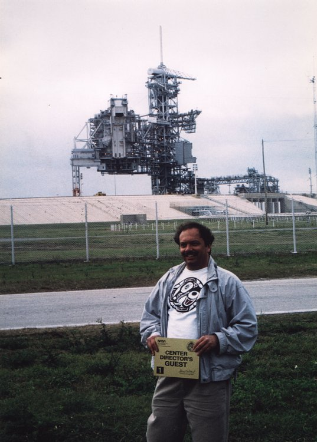
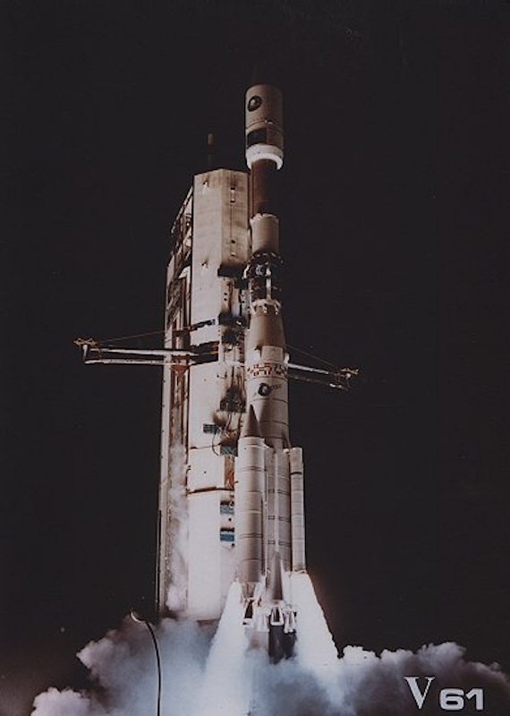
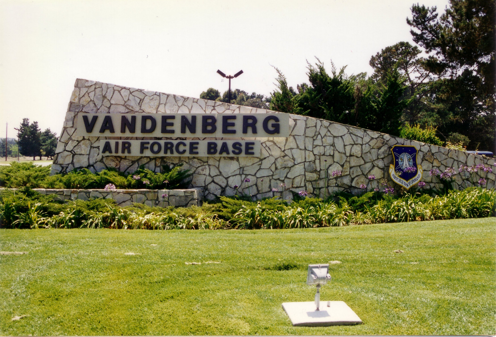
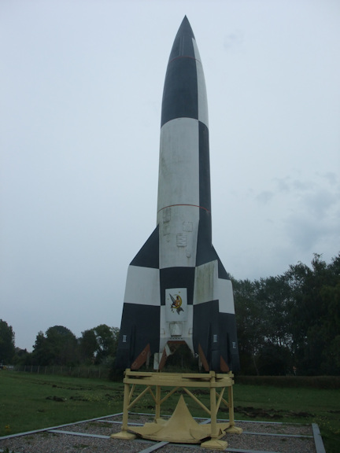
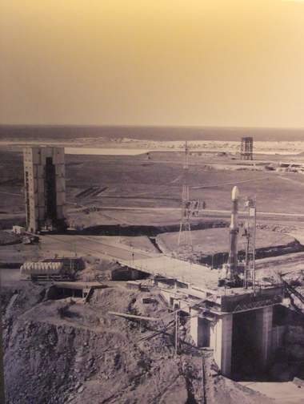
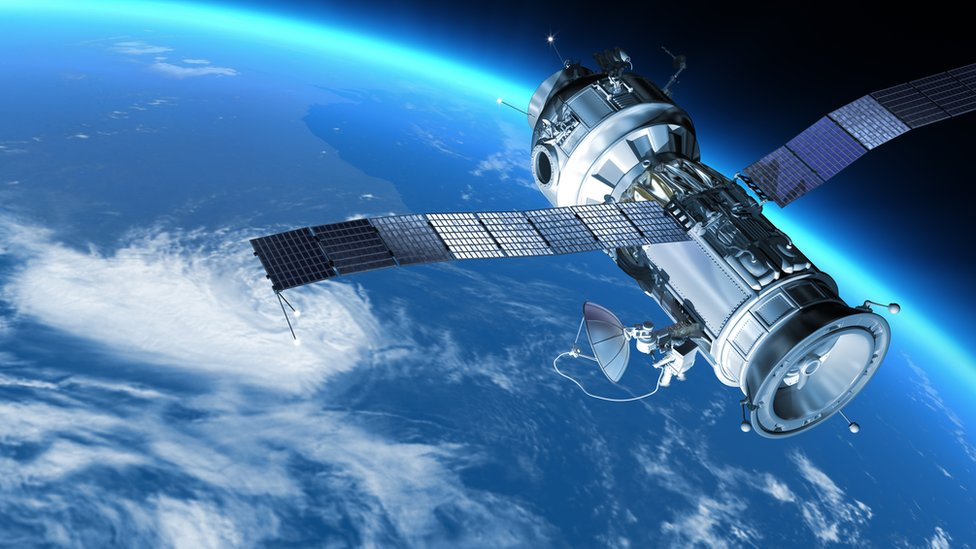
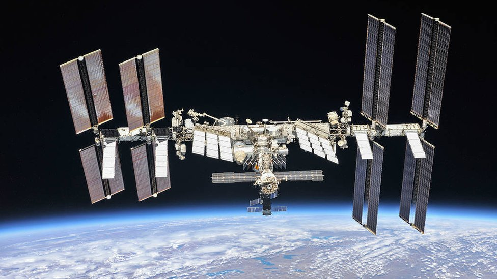
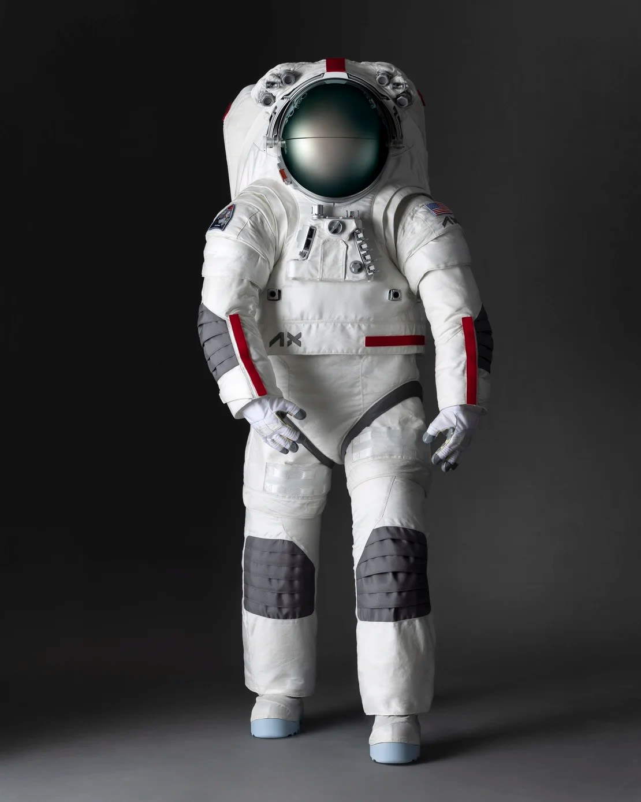
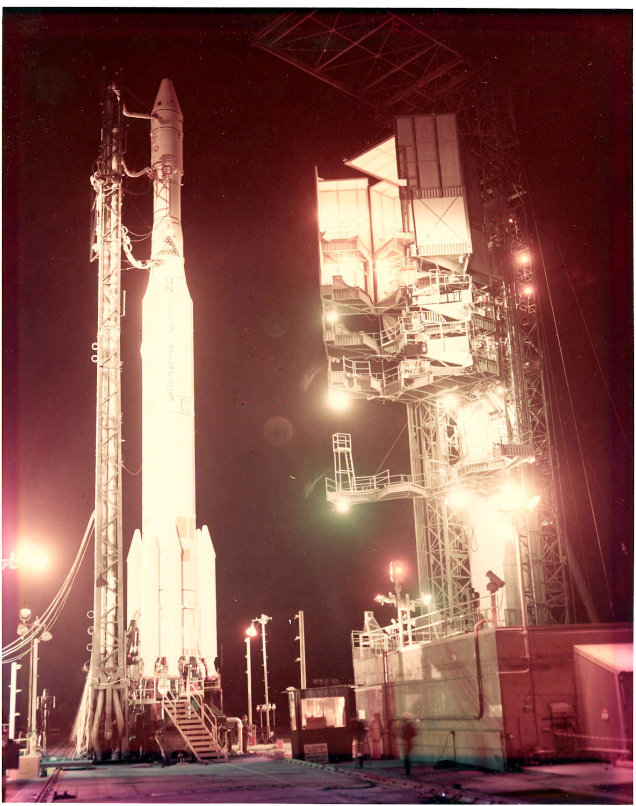

Información Espacial
Todo lo que necesitas saber sobre la historia, tecnología y los centros de lanzamiento que han llevado a la humanidad más allá de nuestra atmósfera.
Centros Espaciales
Los centros espaciales son instalaciones desde donde se realizan lanzamientos y pruebas de misiones espaciales. Estos lugares han sido fundamentales en la historia de la exploración espacial y han permitido el desarrollo de nuevas tecnologías.
Cosmódromo de Baikonur
Ubicado en Kazajistán, el Cosmódromo de Baikonur es el centro espacial más antiguo y uno de los más importantes del mundo. Desde este lugar se lanzó el primer satélite artificial y el primer ser humano al espacio.

Centro Espacial Kennedy
Ubicado en Florida, Estados Unidos, este centro espacial ha sido utilizado por la NASA para misiones importantes como el programa Apolo y el lanzamiento del transbordador espacial.

Kourou
Ubicado en la Guayana Francesa, este centro espacial es utilizado por la Agencia Espacial Europea para lanzar satélites y misiones espaciales.

Base de la Fuerza Aérea Vandenberg
Ubicada en California, Estados Unidos, esta base se utiliza para lanzar satélites y misiones espaciales con órbitas polares.

Peenemünde
Ubicado en Alemania, este sitio fue utilizado durante la Segunda Guerra Mundial para el desarrollo de cohetes V-2.

Woomera
Ubicado en Australia, este centro ha sido utilizado para pruebas espaciales y lanzamientos experimentales.
Tecnología
La tecnología espacial ha permitido el desarrollo de misiones y exploraciones fuera de la Tierra. A lo largo del tiempo, se han creado diferentes herramientas y vehículos que han facilitado la investigación del espacio, como cohetes, satélites, estaciones espaciales y trajes espaciales. Estos avances han sido fundamentales para mejorar el conocimiento del universo y desarrollar nuevas tecnologías.

🚀 Cohetes
Los cohetes son utilizados para transportar satélites, astronautas y equipos al espacio. Son uno de los elementos más importantes en la exploración espacial.

🛰️ Satélites
Los satélites se utilizan para comunicación, navegación, investigación y observación de la Tierra.

🛰️ Estaciones espaciales
Las estaciones espaciales permiten a los astronautas vivir y trabajar en el espacio durante largos periodos de tiempo.

👨🚀 Trajes espaciales
Los trajes espaciales protegen a los astronautas y les permiten realizar actividades fuera de la nave.
Historia

La exploración espacial comenzó a mediados del siglo XX durante la llamada carrera espacial entre Estados Unidos y la Unión Soviética. En 1957, la Unión Soviética lanzó el Sputnik 1, el primer satélite artificial de la historia, marcando el inicio de la era espacial. Posteriormente, en 1961, Yuri Gagarin se convirtió en el primer ser humano en viajar al espacio.
A lo largo de los años, la exploración espacial continuó avanzando con misiones importantes como el programa Apolo, que permitió al ser humano llegar a la Luna en 1969. Desde entonces, diferentes países han desarrollado nuevas tecnologías y estaciones espaciales como la Estación Espacial Internacional, que permite la investigación científica fuera de la Tierra.
Actualmente, la exploración espacial continúa evolucionando con nuevas misiones hacia Marte, satélites más avanzados y proyectos para el futuro de la humanidad en el espacio.